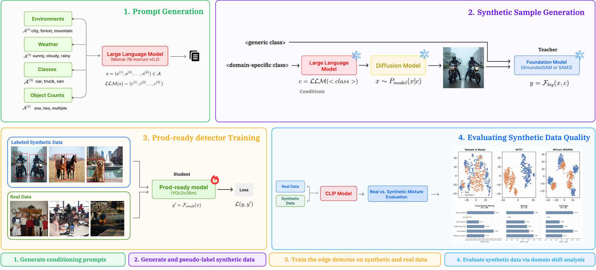
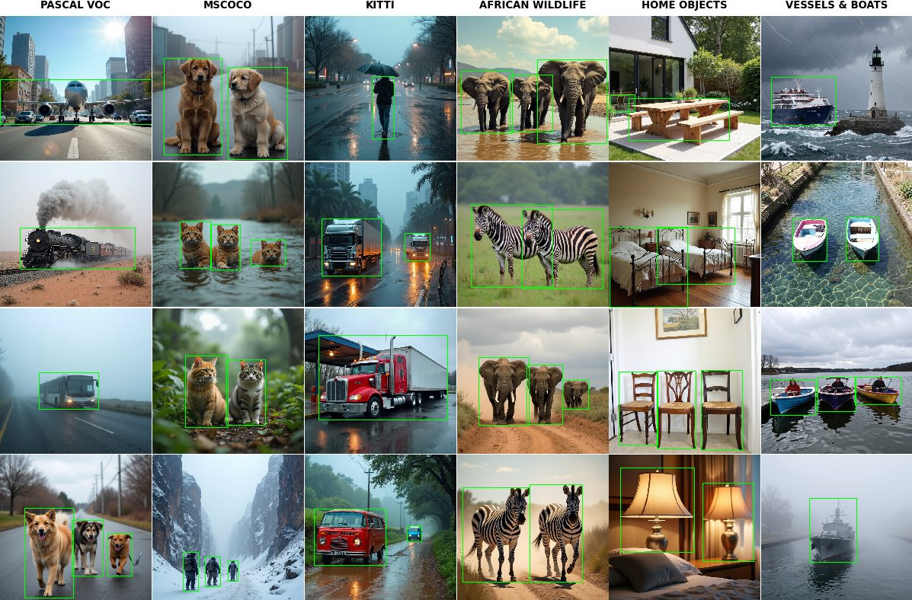
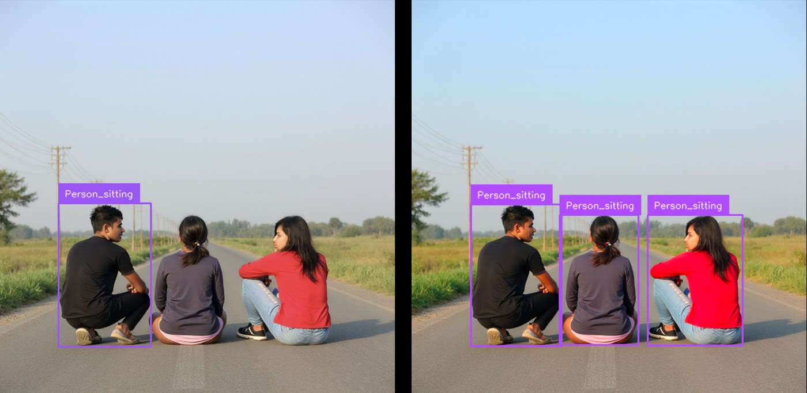
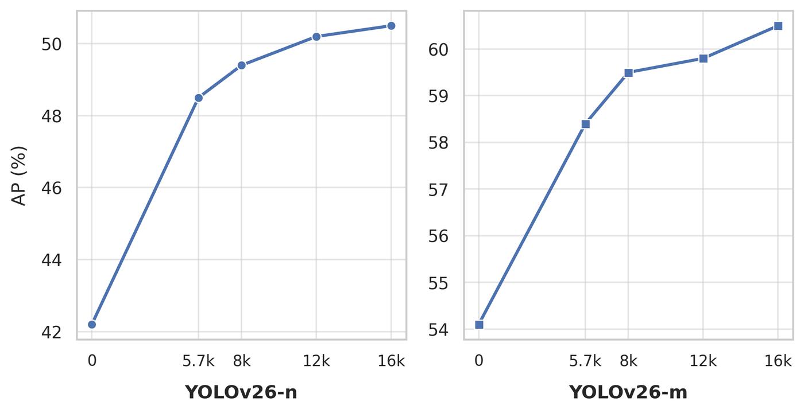
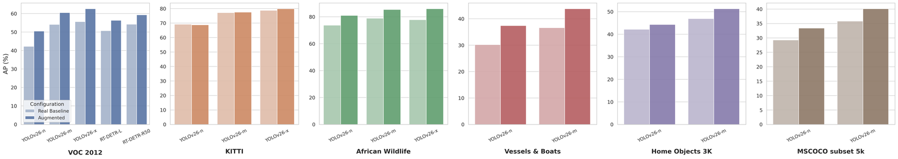
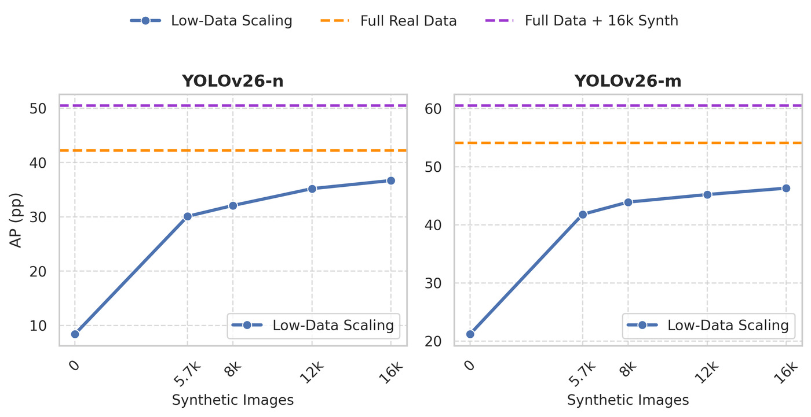
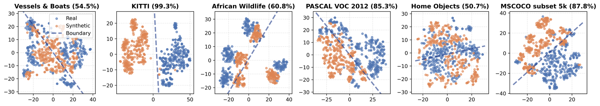
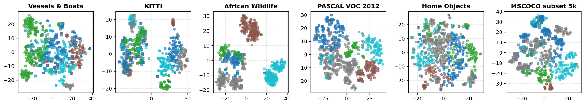
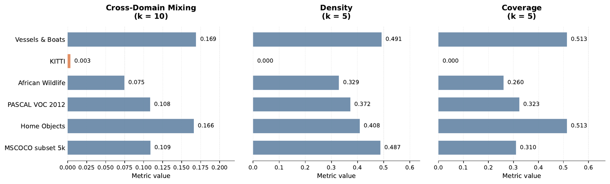

Controllable Synthetic Data Generation for Data-Efficient Object Detection in Real-World Domains
1University of Las Palmas de Gran Canaria (ULPGC)
2Qualitas Artificial Intelligence and Science (QAISC)
Code Paper (soon)
Image and Vision Computing · Preprint 2026
Abstract
Object detectors need diverse, instance-level annotations that are expensive to collect in real-world domains. We propose a training-free pipeline that turns structured text prompts into pseudo-labeled detection data: an LLM writes controllable prompts, a diffusion model synthesizes images, and Grounded SAM provides bounding boxes — without fine-tuning the generator or the annotator.
Mixed with real data, the synthetic set improves detectors across six heterogeneous benchmarks. Gains reach +9.0 pp AP50 on PASCAL VOC at full scale and +35.4 pp AP50 with only 1,000 real VOC images. On the industrial Vessels & Boats dataset, one third of the real images plus synthetic data matches the AP of the full real training set. Utility depends on domain match: diverse and maritime scenes benefit consistently, while viewpoint-locked driving data (KITTI) shows limited transfer.
1. Method
The pipeline has three stages — structured prompt generation, text-to-image synthesis, and automatic annotation — followed by detector training on mixtures of real and synthetic samples.

1.1 Controllable prompts
We iterate over a Cartesian product of scene attributes and use Mistral-7B-Instruct to write natural-language prompts:
- Object class (generic or domain-specific)
- Environment (city, forest, maritime, …)
- Weather (sunny, cloudy, foggy, rainy, …)
- Object quantity (single, two, three, multiple)
Rare conditions can therefore be requested without annotated spatial guidance from real images. Images are then generated with FLUX under these prompts.

1.2 One category per image
Querying Grounded SAM with many categories at once produces false positives, and domain-specific labels
(e.g. person_sitting) often fall outside the model’s vocabulary.
We generate and annotate a single known category per image, optionally mapping domain-specific
names to generic ones at grounding time while preserving the original target class in the annotations.

person_sitting. Right: correct boxes via the generic person grounding prompt.
2. Experiments
We evaluate on six benchmarks — PASCAL VOC 2012, KITTI, African Wildlife, Home Objects 3K, Vessels & Boats (industrial maritime), and an MS-COCO subset — with YOLO26 (n/m/x) and RT-DETR, trained from scratch without COCO pretraining.
2.1 Full-data regime
With the complete real training set available, synthetic augmentation still yields consistent gains on diverse and maritime domains. The lightweight YOLO26-n improves by +9.0 pp AP50 on VOC; Vessels & Boats gains up to +7.2 pp AP. KITTI is the exception: transfer is limited or negative for the nano model.
| Dataset (+synth) | Model | AP50 | AP50+S | AP | AP+S |
|---|---|---|---|---|---|
| VOC 2012 (+16k) | YOLO26-n | 59.4 | 68.4 (+9.0) | 42.2 | 50.5 (+8.3) |
| VOC 2012 (+16k) | YOLO26-m | 70.4 | 76.0 (+5.6) | 54.1 | 60.5 (+6.4) |
| VOC 2012 (+16k) | YOLO26-x | 71.6 | 76.9 (+5.3) | 55.6 | 62.6 (+7.0) |
| VOC 2012 (+16k) | RT-DETR-L | 68.4 | 74.1 (+5.7) | 50.7 | 56.3 (+5.6) |
| MSCOCO 5K (+8k) | YOLO26-m | 52.5 | 58.9 (+6.4) | 35.3 | 40.3 (+5.0) |
| African Wildlife (+2k) | YOLO26-n | 90.1 | 94.6 (+4.5) | 73.7 | 81.0 (+7.3) |
| Vessels & Boats (+9,216) | YOLO26-n | 47.8 | 52.8 (+5.0) | 30.2 | 37.4 (+7.2) |
| KITTI (+16k) | YOLO26-n | 90.4 | 84.5 (−5.9) | 69.2 | 60.4 (−8.8) |
Selected rows from the full-data table. Values in parentheses are absolute changes in percentage points.


2.2 Low-data regime
When real supervision is scarce, synthetic data acts as a practical substitute for missing annotations. On VOC with 1,000 real images, YOLO26-n gains +35.4 pp AP50 (+28.3 pp AP). On Vessels & Boats, 500 real images plus synthetic data matches the AP of the full real set.
| Dataset (real, +synth) | Model | AP50 | AP50+S | AP | AP+S |
|---|---|---|---|---|---|
| VOC (1000, +16k) | YOLO26-n | 17.2 | 52.6 (+35.4) | 8.4 | 36.7 (+28.3) |
| VOC (1000, +16k) | YOLO26-m | 33.6 | 60.3 (+26.7) | 21.2 | 46.3 (+25.1) |
| VOC (1000, +16k) | YOLO26-x | 31.0 | 63.7 (+32.7) | 20.2 | 48.9 (+28.7) |
| MSCOCO (800, +8k) | YOLO26-m | 22.1 | 41.6 (+19.5) | 12.4 | 27.7 (+15.3) |
| Vessels (500, +9,216) | YOLO26-m | 27.6 | 48.9 (+21.3) | 17.4 | 36.4 (+19.0) |
| African Wildlife (500, +2k) | YOLO26-x | 87.6 | 96.1 (+8.5) | 68.3 | 84.4 (+16.1) |
| KITTI (1000, +16k) | YOLO26-n | 47.4 | 55.3 (+7.9) | 28.5 | 35.0 (+6.5) |

3. When does synthetic data help?
We embed real and synthetic images with CLIP, cluster the real set, and visualize overlap with t-SNE. Utility depends on compatibility with the target distribution and how much real data is already available.



KITTI’s near-zero mixing coincides with the full-data degradation for YOLO26-n, while Vessels & Boats shows higher overlap and strong gains. Still, overlap alone is not enough: Home Objects has relatively high neighborhood mixing with only modest full-data gains, and African Wildlife improves substantially despite lower mixing. With scarce real data, even KITTI benefits — so domain gap and data regime interact.
4. Takeaways
- Fully automatic synthetic detection datasets — no manual boxes on generated images.
- Controllable diversification of rare environments, weather, and object counts.
- Strongest returns in low-data regimes; gains also appear at full scale for diverse domains.
- Domain diagnostics explain when augmentation helps and when viewpoint-locked domains resist transfer.
- Improvements in 31 of 32 evaluated settings; synthetic data complements, rather than replaces, real annotations.
Citation
@article{penaseco2026controllable,
title={Controllable Synthetic Data Generation for Data-Efficient Object Detection in Real-World Domains},
author={Pe{\~n}a-Seco, Jose R. and Su{\'a}rez-Ram{\'i}rez, Jonay and Penate-Sanchez, Adrian and Monz{\'o}n, Nelson},
journal={Image and Vision Computing (preprint)},
year={2026}
}